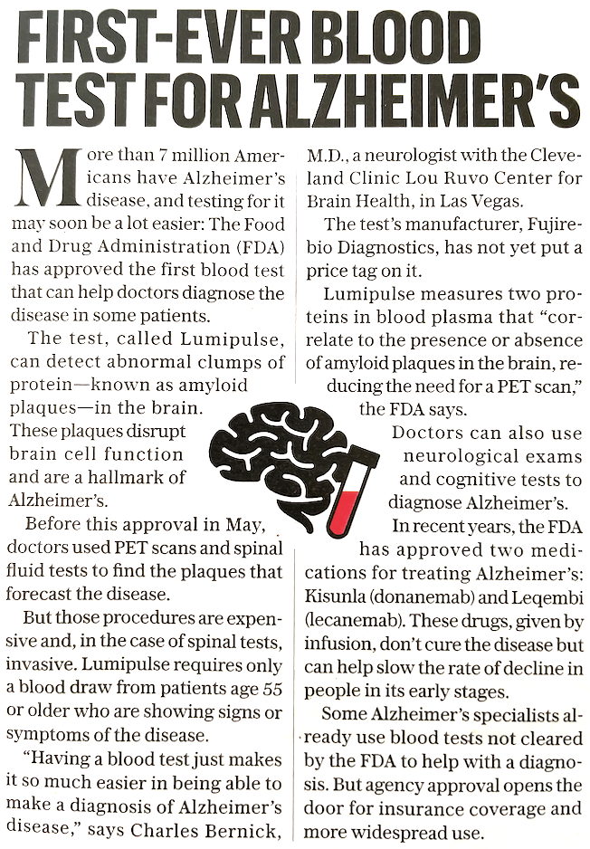
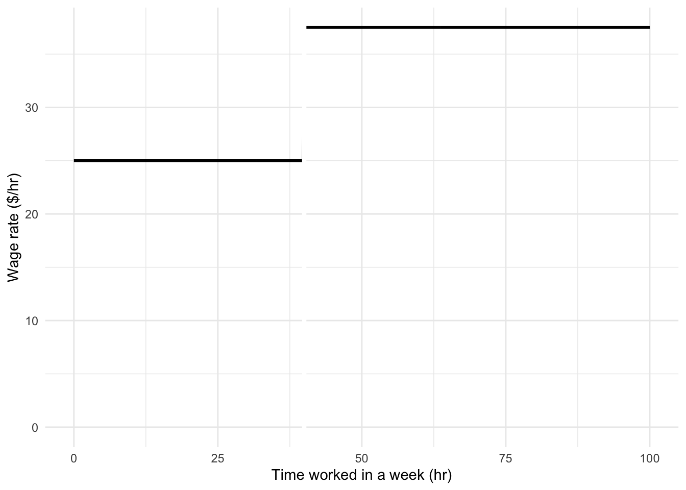
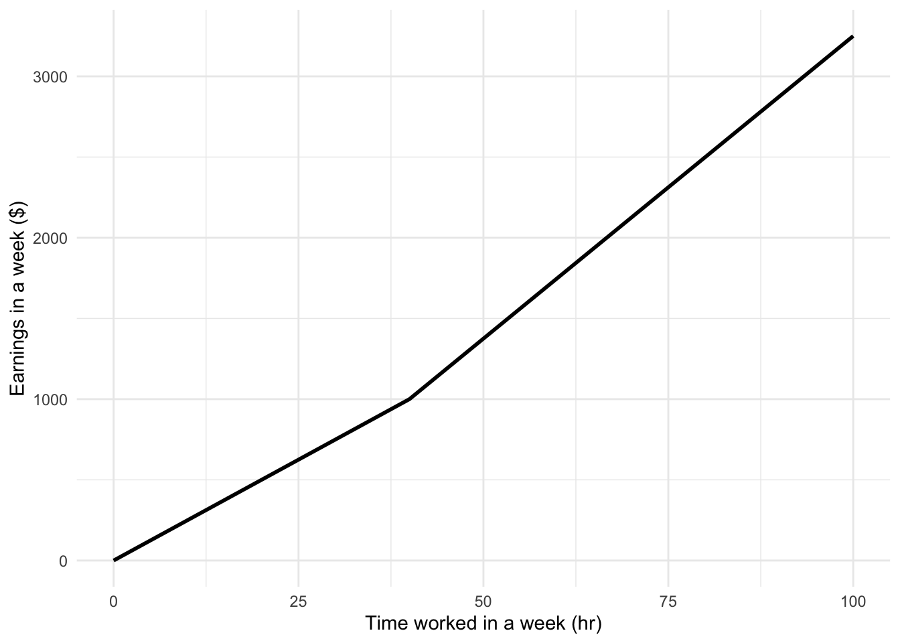

Chapter 04 Catalog
NoteGroup: unclassified
File: Chap-04/ant-spend-shoe.qmd Status: draft
Exercise 1 A car typically has instruments to measure:
- speed (speedometer)
- mileage (odometer)
- fuel level
Fancier cars also show:
- instananeous (second-by-second) fuel economy (usually a menu item in the display)
- tire pressure
For each of these, say whether it is a rate, a rate of change, or something else. And, for each, give a very brief explanation of your answer.
File: Chap-04/ash-ride-window.qmd Status: sketch
Exercise 2 Another simple value statement compares flights. Suppose location C is twice as far as B from A. The cost of providing the service A -> C will be higher. Common intuition often suggests that the ticket price for the A -> C flight will be about twice that of B -> A.
File: Chap-04/aspen-let-shelf.qmd
Exercise 3 AI Generated Exercise: The Freelance Consultant’s Dilemma
Scenario: Lydia is a freelance graphic designer who is trying to determine her “Productivity Rate” to better quote future clients. Last week, she spent 15 hours designing a 60-page annual report for a local non-profit. This week, she spent 12 hours creating a 40-page brand style guide for a startup.
The Question: Which of the following statements correctly compares Lydia’s rates of production between the two projects?
als-1-krfis
Note from human: This is the kind of problem familiar from textbooks where knowing what chapter the question refers to tells the student the kind of answer that is expected. This chapter is about “rates,” so rates must be part of the answer! A more authentic question might leave it to the student to decide whether a rate provides a good approach. For instance, if the length of the report were irrelevant, the overall time spent might be the correct measure of productivity (or, rather, “unproductivity.”). Page count is easy to measure, but not clearly related to the purpose at hand. Often, a high page count is a mechanism to hide information.
President Woodrow Wilson (1856-1924) is reported to have said, “If I am to speak ten minutes, I need a week for preparation; if fifteen minutes, three days; if half an hour, two days; if an hour, I am ready now.”
File: Chap-04/avoid-send-painting.qmd Status: sketch
Exercise 4 dollars per square foot
payment per money in account
flow versus rate of flow: water volume per minute moved by a pump (Compound: water flow per minute)
economic product per person (Compound: economic product per person per day)
miles per gallon (Compound: ton miles per gallon(truck) or passenger miles per gallon (car or plane).
File: Chap-04/bat-meet-mattress.qmd Status: sketch
Exercise 5 The rate 80 Cal per mile is, like all other rates, a quantity. All quantities have a dimension. The dimension of 80 Cal/mile is [energy] / L, that is, M L T-2. In this case, the dimension of the rate is different from the dimensions of either of the quantities that formed the rate. POINT OUT THAT THIS IS A FORCE and observe that a force is a good way to describe the difficulty of walking.
File: Chap-04/bee-spend-magnet.qmd
Exercise 6 With the metric system, students are taught that the prefixes milli, micro, nano, pico, and so on represent successive powers of ten smaller than the base unit.
For traditional units, even in household where they are used every day, many people don’t know that the unit names also correspond successive powers, but not powers of ten.
Starting with the traditional volume measure “cup”, say how much bigger each of these units is with respect to the previous one.
File: Chap-04/beech-put-knife.qmd
Exercise 7 Housing in New York City is famously unaffordable. Civic leaders argue that the solution to the unaffordability “crisis” is to build new housing.
As of 2025, New York City has an “ambitious” plan to add 50,000 new housing units each year. There are currently about 3,750,000 units in the city. The example about new housing in the text suggests that existing stock falls by about 1% per year and that the number of households in the US is increasing by about 1% per year. Use these numbers to calculate whether 50,000 new units per year will solve the housing shortage.
File: Chap-04/boy-speak-dish.qmd Status: sketch
Exercise 8 In the US population example, the chapter gets a forecast of future population by “accumulating the rate of change” over future years. In plain language, what quantity is being accumulated and what is the with-respect-to quantity?
File: Chap-04/dolphin-see-pants.qmd Status: sketch
Exercise 9 The following short article appeared in the AARP Bulletin for July/August 2025 about US government approval of a new, inexpensive, and non-invasive test for Alzheimer’s disease.

There is an unexplained restriction described in the fourth paragraph:
“Lumipulse requires only a blood draw from patients age 55 or older who are showing signs or symptoms of the disease.”
Explain what might justify the age and sign-or-symptom restriction.
TipAnswer
Some readers may see the restriction as reflecting the economics and high cost of health care. But there is a more fundamental factor involved, the false-positive rate of the test. The prevalence of Alzheimers is greater in older adults, especially those showing signs or symptoms. The higher the prevalence for a test of a given specificity, the lower the false-positive rate.
..id..
File: Chap-04/duck-sleep-lamp.qmd Status: draft
Exercise 10 Perspectives on percent …
- The first thing to keep in mind is that percent is a unit of [1], written by moving the decimal point two places to the right.
- 0.0542 is 5.42%.
- 2.612 is 261.2%.
- 0.0005 is 0.05%.
You can write any number in units of percent. The advantage to doing so is that it converts numbers in the range 0.01 to 1 into the range 1 to 100. People can process such two-digit numbers like 56% faster and perhaps more reliably than numbers like 0.56.
- As a matter of practice, “percent” is also used to designating a proportion of some whole.
- If the whole is 100 miles … 12% corresponds to 12 miles.
- If the whole is 0.08 liters … 25% corresponds to 0.02 liters.
- If the whole is 4,000,000 USD … 50% corresponds to 2,000,000 USD
- If the whole is 3 kg … 400% corresponds to 12 kg.
In this context, the symbol “%” serves two purposes: to indicate that the decimal point has been moved two digits to the right; and, to replace the words “a fraction of,” or “a proportion of,” or “of the whole.”
- Example: “a fraction of 0.11 of 700 seconds is 77 seconds” can be replaced with “11% of 700 seconds.” Much shorter.
Percent is also sometimes used as a trick to fooling the reader into thinking a quantity is larger than it really is. For instance, 5 and 500% are the same quantity, but 500% has more digits and may look more imposing. Should this propaganda use be distained?
Percent is often used to signify a proportional amount of growth or decline. For example, a five-fold increase from 2 to 10 can be expressed as a growth of 400%. Why 400% and not 500%? That’s because the original value, 2 here, corresponds to 100% of itself. The end value, 10 in this example, is 500% of 2, so the amount of change is 500% - 100% = 400%. Another way to see this: the change from 2 to 10 involves an increase by 8. Since 8 is four times 2, we can say the increase by 8 is an increase by 400% of the starting value 2.
Likewise, an increase by 5% is the same as an increase to 105% of the original value.
Decreases are even more confusing. A decrease of 20% corresponds to a change to 80% of the original value.
Percentages, when used to signify “a proportion of,” do not add. For instance, starting at 100 USD, two successive increases of 20% (that is 20% then another 20% increase) leads to an overall increase of 44%.
“Percent” and “percentage points” are not the same thing. Use “percentage point” only when referring to a change in a proportion. For instance, if inflation is at 5% and then changes to 7%, we have an increase by 40% in inflation or, stated differently, an increase by 2 percentage points.
When you encounter percent or “percentage points,” make sure you understand whether they are talking about a the “proportion of something,” a “percentage increase,” a “percentage point increase.” If it is a change—increase or decrease—you should be aware of what the starting level of the quantity was.
To illustrate how one might be mislead by percent and percentage points, consider this statement from an AI:
Cigarette smokers face significantly higher mortality risks than non-smokers, with studies showing smokers are about twice as likely to die prematurely, experiencing higher rates of lung cancer, heart disease, and respiratory illnesses; for example, one study found current smokers had an overall mortality rate of around 11 per 1,000 person-years, compared to about 3 per 1,000 for never smokers, with risks increasing with the amount and duration of smoking.
Cigarette smokers have a 100% greater risk of premature death. dsl-1-72kd
Would (1), if true, mean that smokers are certain to die prematurely? dsl-2-72kd
The mortality rate of cigarette smokers is 267% greater than for non-smokers. dsl-3-gsd
Does (3), if true, mean that cigarette smokers have a mortality rate greater than 100%? (Cats, with their proverbial nine lives, might get away with this, but not people.) dsl-4-hwdw
The mortality rate of smokers is 0.8 percentage points higher than for non-smokers.
- Does (5), if true, mean that smoking is not a big deal? Explain why or why not.
File: Chap-04/eagle-blow-blanket.qmd Status: sketch
Exercise 11 From the Short Introduction to Demography, reading questions:
The author points out that world population was mostly steady over thousands of years. In this historical period, she points to a doubling time for population, that is, the time interval over which the population doubled in size. Then, near the end of the 18th century, population started to grow much more rapidly. After the early work of John Graunt, interest in demography grew rapidly. Why might interest in demography grow at about the same time as population increase was also growing. (Ans: When things are constant, there’s no need to be concerned with the relationships among those things. But in a changing world, understanding the underlying relationships becomes more important.)
Estimate how many people have ever lived from the population figures the author gives. Explain your estimate.
According to the Short Introduction, who estimated that the mortality rate for men does not differ between age 20 and age 40?
File: Chap-04/falcon-iron-pants.qmd
Exercise 12 Thanksgiving chefs can easily find recommendations for roasting turkey. On source suggests 13-15 min/lb at a temperature of 325-350°F. Another source recommends 15-20 min/lb at a temperature of 325°F.
- Explain why it’s sensible to convey the cooking time using a rate, rather than just saying how long to cook the bird.
- Of course, there are other rates that can be constructed: cooking time with respect to …. For instance, cooking time depends on temperature. Would it make sense to have a rate like 0.5 min / °F? Explain how this might help or whether it makes any sense at all.
Back to cooking time versus weight …
Once source gives a handy table for cooking at 325°F:
- 10 pounds: cook 165 min
- 15 pounds: cook 210 min
- 18 pounds: cook 240 min
- 21 pounds: cook 270 min
- Between 10 and 15 pound turkeys, what is the rate of change in cooking time with respect to weight?
fip-3-w4s
- Between 10 and 15 pound turkeys, what is the rate of change in cooking time with respect to weight?
fip-4-flw
File: Chap-04/finger-dig-fridge.qmd
Exercise 13 The text discusses the “MPG Illusion,” where increasing fuel economy from 10 to 20 mpg saves much more gas than increasing it from 30 to 40 mpg. Why does the European unit of Liters per 100 km (L/100km) avoid this confusion?
File: Chap-04/kid-sail-sofa.qmd Status: sketch
Exercise 14 SIMPLE EXERCISE RELATING to the walking examples.
Taking into account that a person uses about 2000 Cal in an ordinary day’s activities, the excess energy available for the marathon is only 1000 Cal. That supports about 12.5 miles of walking.
File: Chap-04/lion-understand-suitcase.qmd
Exercise 15 Consider the range of weights of these mammalian species: bat, cat, human, cow, whale. (You may have to do a web search to get typical values.) How many orders of magnitude are spanned between a bat and a whale?
File: Chap-04/maple-shut-pantry.qmd
Exercise 16 Consider the data on the body mass (kg) and brain mass (gm) for 62 species of mammals shown in Figure 1. (You can hover the cursor over a point to see the species name.)
- The lesser short-tailed shrew has both the smallest body mass and brain mass. What is the brain mass of the short-tailed shrew? (Pick the answer that’s closest.)
msp-1-4lse
- The water opposum, arctic fox, nine-banded armadillo, and rock hyrax (in the middle of the cloud of points) all have about the same body mass. What is that body mass? (Pick the answer that’s closest.)
msp-2-sddo
- Which of these animals has a body mass closest to 10 kg?
msp-3-fhsl
- Of the mammals in the range of body masses from 10 to 100 kg, which has the smallest brain size?
msp-4-le4
- The gray bar surrounding the blue line in Figure 1 contains about 2/3 of the 62 mammals plotted. Which animal has the smallest ratio of brain mass compared its range of body masses?
msp-5-odr
Figure 2 shows the daily sleeping time versus lifetime for the 62 mammals. The level of danger from predation that the animal is exposed to is shown by color.
- The mammal who sleeps the least sleeps how many hours per day?
msp-6-kew
- A chinchilla lives about 7 years. What level of danger does the chinchilla face?
msp-7-ese
- The Sleep axis is linear, while the Lifespan axis is magnitude. Explain why this choice makes sense (or if it doesn’t).
File: Chap-04/panda-draw-shirt.qmd
Exercise 17 The US government debt (usually called the “National Debt”) is approximately $40 trillion as of early 2026. Written out, that’s $40,000,000,000,000. Or, $4e13.
The “gross domestic product” (GDP) of the US is about $30 trillion per year. The per-year is important. It’s the same as $2.5 trillion per month, or $1 million per second, or $3000 trillion per century.
Economic journalists often describe the debt condition of a country as ratio of debt to GDP. For instance, looking at the amounts $40 and $30 trillion, they would measure the US debt is 125% of GDP. A journalist’s rule of thumb is that ratios above 100% are a sign of trouble.
But, since GDP can also be measured as $3000 trillion per century, wouldn’t it be right to say that the ratio of debt to GDP is 1%? Explain why or why not the 125% figure is meaningful.
Tip
Comparing GDP (dimension W T-1) with government debt (dimension W) only makes sense if we are interested in extracting the T component. The ratio Debt/GDP has dimension T. Whichever way we choose to denominate GDP (per year, per second, per centure), Debt/GDP will be a measure of time. The 125% should really be stated as 1.25 years, or using the per century denomination, 0.0125 centuries. Same thing.
It’s not clear what the proper quantity, 1.25 years, tells us about the economic situation. It’s not like we are going to make everybody work for 1.25 years with zero take-home pay in order to pay off the debt. It’s not even clear whether the debt needs to be paid down.
Maybe it would be better to think of debt in terms of how much it costs to carry it. For instance, at an interest rate of 5%, it costs $$30 \(\times 0.05 = \$1.5\) trillion each year to “pay for” the debt. If this money could be invested in the economy or in human capital, it would be a big deal. But we also benefit in an ongoing way from the historical investment of $1.5 trillion/year that was enabled by the debt.
File: Chap-04/panda-refer-window.qmd
Exercise 18 There are several ways to measure transportation services. Let’s focus here on the transportation of people. The distance of transport is, obviously, an important aspect of transportation services. So it the number of people transported.
In a proper measure of transportation services, it seems reasonable that the longer the distance, the more transportation being provided, so long as the number of passengers is the same. Similarly, the more passengers carried, so long as the distance is the same, the more transportation is provided.
- Which of the following is a sensible way to measure the amount of transportation?
prw-base-wlci
- 100 passengers are on a flight covering 500 miles. How much transportation service is provided to the group of passengers?
prw-2-cksd
Many people are concerned with the amount of fuel used in air travel. For modern jets (with a full load of passengers), the amount of fuel used is approximately 0.02 to 0.03 gallons per passenger mile.
- What is the dimension of “gallons per passenger mile?”
prw-3-kdlw
- People in the US are used to measuring fuel economy in “miles per gallon.” This contrasts with the style in much of the rest of the world the unit is “liters per 100 km.” Assume that a group of friends is travelling 600 miles to a concert. They could fly or drive. If there are three friends, how many gallons of fuel will the one-way air travel consume (for these three passengers)? (Pick the closest answer.)
prw-4-cksd
- Now imagine the three friends are carpooling to the concert in a car that gets 30 miles per gallon. How many gallons of fuel will the one-way drive consume for all three passengers. (Pick the closest answer.)
prw-5-wels
- Some people reason that it does not consume any fuel for the three friends to fly, since even if they didn’t fly the plane would consume the same amount of fuel. Are you sympathetic to this argument? Explain why or why not.
File: Chap-04/reptile-speak-piano.qmd Status: sketch
Exercise 19 Velocity as a rate of change of position w.r.t. time. Acceleration as a rate of change of velocity w.r.t. time. Velocity has dimension L/T. Acceleration has dimension (L/T)/T or L T-2
File: Chap-04/rhinosaurus-shut-fork.qmd
Exercise 20 Write a problem about “mortality” versus “mortality rate.”
- The mortality rate is 100% for people. What is the “with respect to” variable that makes sense of this claim?
rsf-1-eks
- Mortality in the Civil War Battle of Chickamauga was about 25%. This is much lower than the mortality of 100% experienced by the population at large. Explain.
- According to the US Census Bureau, the mortality rate for middle-aged men and women is about 0.5. What must be the units and with respect to variable for this to make sense?
File: Chap-04/seahorse-bathe-knife.qmd
Exercise 21 The following is from the Atlantic magazine article, “Science Is Winning the Tour de France” (by Matt Seaton, July 25, 2025)
The gold standard of cycling performance—which boils down to a rider’s ability to push against the wind and go uphill fast—is a high power-to-weight ratio, given in watts per kilogram. The benchmark figure is how many watts per kilo a cyclist can sustain for a one-hour effort. Every rider now has a power meter fitted to their bike, so they know their numbers in a constant, real-time way (together with heart rate, speed, and other measurements).
The article describes the then-current leader in the Tour de France as having a power-to-weight ratio of seven watts per kilogram.
- If this rider weighs 70 kg, how many watts can he generate?
sbk-1-vsw
- Look up the conversion factor from watts to horsepower. How many horsepower is the rider generating?
sbk-2-ie2d
- A horse weighing 500 kg can generate one horsepower while walking. How does the horse’s power efficiency per weight compare to the champion bike rider.
sbk-3-r7f
- There is no conversion factor from watts to calories. Why not?
sbk-4-ri3
- Look up the conversion factor from watt-seconds to kilo-calories (kcal (or “Cal”), the relevant unit when looking at diet). How many kcal does the rider produce when biking for one hour at 7 w/kg?
sbk-5-nsl2
1 watt-second is 0.000239006 kcal. In an hour, the rider generates 3600 s times 70 kg times 7 w/kg = 422 kcal
- It’s estimated that a person’s efficiency when converting dietary calories to work/movement calories is about 25%. In an hour of biking at 7 w/kg, how many dietary calories does a 70-kg rider consume?
sbk-6-fjfk
- An “average” adult walking at 2.5 mi/hr is said to use about 150 watts of power. For this hypothetical adult, how much energy is consumed in a 1-hour walk?
sbk-7-fjfk
- In the exercise/diet literature it’s said that walking a mile consumes about 100 kcal.
This is (roughly) consistent with the 150 watts of power claimed when waking at 2.5 mi/hr.
File: Chap-04/sheep-feel-tv.qmd Status: null
Exercise 22 AI-generated question:
At a local cafe, you are deciding between two bags of coffee beans. Brand A costs $14.40 for a 12-ounce bag. Brand B costs $18.00 for a 16-ounce bag. Which brand offers the better value based on the unit price per ounce?
sft-1-qifl
Human comments:
A “unit price” of a product is the price per unit amount of the product. For coffee, the sensible unit for amount is ounces. For other substances, the unit might be stated in terms of mass or count, etc. “Unit price per ounce” sounds like a compound ratio: the unit priced divided by the number of ounces. This would double-count ounces. “Price per ounce” on its own says what they are looking for to measure value.
The last item in the multiple choice should not be ruled out. If you are only going to use 8 ounces before the coffee becomes stale, buy the cheaper bag. The problem statement nullifies this choice, since it says, “based on the unit price” with the unit defined as ounces, not bags. Responsible modelers check such assumptions to make sure they are aligned with the actual purpose of the model. A rule of thumb for consultants is to check first whether what the client says they want is really what they want.
File: Chap-04/spider-forgive-pantry.qmd Status: draft
Exercise 23 One confusing aspect of the way interest rates are specified has to due with “compound interest.” Suppose you borrow $1000 on January 1 at an outrageously high interest rate of 10 percent/month. You are to pay back the loan, principal and interest, after six months. How much should you pay?
One approach is to multiply the interest rate by the duration of the loan. This gives 10 percent / month \(\times\) 6 months = 60 percent. According to this method, the payback amount is $1600, that is, the $1000 principal plus $600 in interest.
Another approach, called compound interest might interpret 10 percent per month in the following way: At the end of each month, that month’s interest is added to the principal. Each month, the principal is increased by 10 percent of the previous month’s principal.
| Date | Principal | increase from previous month |
|---|---|---|
| Jan 1 | $1000.00 | not applicable |
| Feb 1 | $1100.00 | $100.00 |
| Mar 1 | $1210.00 | $110.00 |
| Apr 1 | $1321.00 | $121.00 |
| May 1 | $1474.10 | $132.10 |
| June 1 | $1610.51 | $147.41 |
| July 1 | $1771.56 | $161.05 |
Calculations of this sort are hard to do in one’s head. Many consumers would be surprised to hear that six-months interest growth comes to $771.56 rather than $600.
There are good economic reasons to treat interest as compounding. But this means that a loan agreement should specify not just the initial principal ($1000) and the interest rate (10 percent per month), but also the method of compounding.
Here are three common methods. Make sure you know which one to apply when making or taking a loan!
- Simple interest: Final payment $1600.00
- Monthly compounding: Final payment $1771.56
- Annual compounding: Final payment $1483.24.
Some consumer-protection regimes require that interest rates be stated in a standard format which amounts to an annual rate compounded annually. This is called an “Annual Percentage Rate” (APR). An interest scheme which compounds 10 percent monthly has an APR of 2,138.43% per year, nothing near the 120% that intuition suggests. Perhaps you can see why 10 percent per month is an outrageous interest rate!
Maybe do some COMPUTER CALCULATIONS of APR. For instance, at 1 percent per month, there isn’t a huge difference between monthly rate and APR.
Following conventions is important when communicating quantitatively. APR is one such convention.
File: Chap-04/spider-stand-ship.qmd
Exercise 24 Accounting professionals have a busy quarter year connected to the end of each fiscal year up through the deadline for filing taxes. Large accounting firms typically bring on extra workforce during this period, and recruit college students to work long hours over a couple of months. One recent graduate told me she was paid $25/hr for such work. But, by US Federal law, the wage rate is increased by 150% for any hours worked over 40 per week. (This is called, “time and a half for overtime.”) The graduate reported working sometimes 90 hours per week.
Consider these two functions where the input is the number of hours accumulated during a week.


- What is the wage rate at 75 hours? (pick the closest)
- What is the total earnings (in dollars) at 75 hours? (pick the closest)
The two functions in UNRESOLVED fig-wage-overtime are closely related. But their outputs have different dimensions.
- What’s the dimension of the output of the earnings function?
- Consider the rate of change of earnings with respect to hours worked. What is the dimension of this rate of change?
- The rate of change of a function’s output with respect to its input is, graphically, the slope of the function’s graph. Often, this rate of change is different at different input values. Is that the case for the rate of change of earnings with respect to hours worked?
sss-5-kes
- One of these statements is true, the others are false. Which one is true?
sss-6t43w
File: Chap-04/squirrel-wish-vase.qmd Status: sketch
Exercise 25 PUT THIS IN AN EXERCISE
Remember that “[energy]” is pronounced, “the dimension of energy.In fraction notation we could write this as \[\frac{\text{1 mile}}{\text{80 Cal}}\ \text{is the same as}\ \ \frac{1}{80}\frac{\text{mile}}{\text{Cal}} = 0.0125\ \frac{\text{mile}}{\text{Cal}}\] Whether to write the numerical part of the rate in quotient or in decimal form is a matter of style.